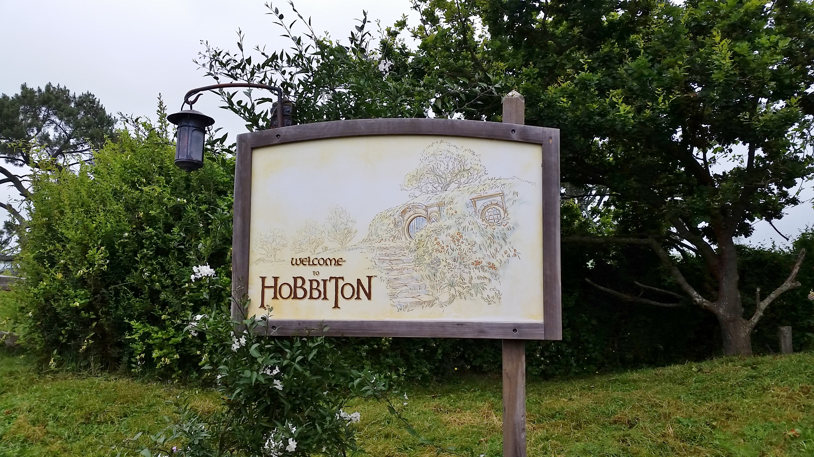
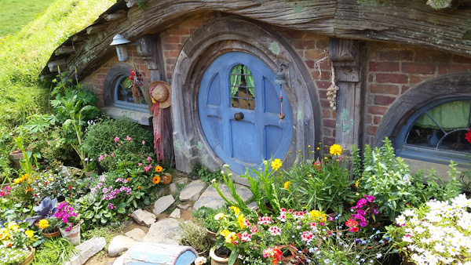
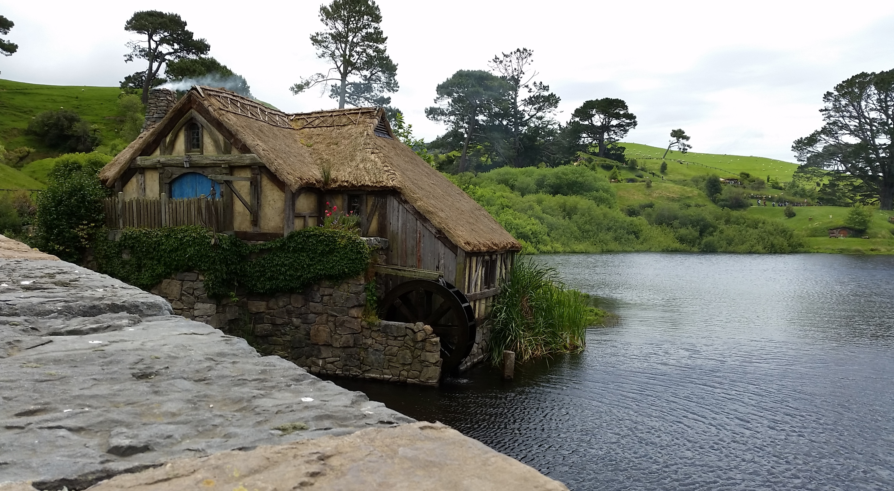

8 Posts
See ya later
DEC 9
Noticed that people here like to say that as a form of goodbye even though often times "later" may actually
mean some uncertain amount of time into the future, or quite realistically, even never.
Well, I don't know if I'll ever be back here again but I sure hope to return someday.
I guess for now, this is a "see ya later, Australia!".
Postcard Places
DEC 2
It's funny how the most "unreal"-looking places, at least for a girl from the city,
are the ones designed by nature. For someone who's used to seeing buses and cars and bustling streets
all the time, the feeling of sitting down on the rocks, knees hugged against my chest, slight breeze
from a distance, and just having a (nearly) unobstructed view of the lake, even just for half a minute,
is completely destressing.
New Zealand
DEC 1
Sorry for lack of updates...I have limited Internet access because I'm in New Zealand this week but
when I do get Wifi I don't seem to be able to post any pictures :( But I promise to post something more in
depth eventually (maybe when I return to Sydney lol)
But seriously, thanks for following my posts if you have been!
Hobbiton
DEC 1



Auckland is a few hours away from this gem of a place called Hobbiton, where parts of The Lord of the Rings/The Hobbit
were filmed. I'll admit that I don't follow the books/movies, but this place is still worth visiting if you ever get the
chance to visit New Zealand. It's a picturesque place where the man-made sets (hobbit holes and all) blend in harmoniously
with the green hills, mini lakes, and grazing flocks of sheep.
10 Posts
Hiya
JUL 21
Yayy day 1! It's 4pm here in Sydney and jet lag makes me wanna nap so badly. But today was pretty productive because I got some
logistics dealt with and made a few friends along the way :) This morning I got picked up with several other exchange students
from my host uni. Turned out that in our group of seven, five of us were from the U.S., and out of those five, three of us were
from California. Small world, eh?
Walked around and got lost on campus with a friend I made from the shuttle bus ride, and I really love the open feel of the campus.
Lots of grassy areas/lawns like Berkeley. Finally seeing places in real life after having anticipated doing so for months is a
strange but nice feeling.
The apartment building I'm living in is really new and clean, but so far it feels more like a hotel room because the hallways are
empty and the living room itself is actually rather lifeless and cold (literally). But oh well, maybe I'll warm up to it later.
Reminder of the day:
I forgot that people walk on the left here, so for the rest of the day I was consciously reminding myself to stay on the left after
I noticed how I was walking directly towards people coming in the opposite direction. Wups.
18 Posts
No Worries
AUG 15
Kind of like the equivalent to "no problem" or "you're welcome", except it just sounds so much nicer. I can only think of one
person back home who commonly uses this phrase, but in Australia I hear it everywhere. Can't help but think of "Hakuna Matata"
from The Lion King every time someone says it.
AUG 5
Today I visited the botanical gardens with Emily and Louise and got to read a little bit about Australian history, and how the Aboriginal people
were treated and discriminated against by European settlers. There was this walkway in the park where you could follow a timeline of significant
points in Australian history with regards to the Aboriginal people. It reminded me very much of the history between the Native Americans and the
European settlers in North America.
A difference I noticed between the two pieces of history was that the Australian government actually has a day called Sorry Day for people to formally
apologize to the indigenous people in public for mistreating them back then, whereas in America even though we have an Indigenous People Day, some
people still treat it as Christopher Columbus Day. I think this kind of unpleasant history is more brushed over in the U.S., but here in Australia
they are more transparent about the government’s past wrongdoings, and it shows in public exhibits like this one.
Chinese Garden of Friendship
AUG 1
6 Posts
The past two weeks in a nutshell
SEPT 7
So I have been pretty bad at updating this blog recently...but that's because I've been kept quite busy! Time is seriously flying by.
In the midst of basically midterm/project season here, I've been able to squeeze in some fun things here and there. Here are some
snapshot updates:
A night at Luna Park:


Bondi Kite Festival:
It was super packed here. Not sure if I would do something like this again, but it was a very beautiful day and I definitely
soaked up a lot of sun :P


7 Posts
NOV 14
Visited Manly again today and stopped by the building that was used as the exterior of Gatsby's mansion in the latest film version of
The Great Gatsby! This castle-y building used to be a seminary and now functions as a school of management, which I thought was kind
of interesting. The only reason I found out about this place was because someone told me the other day that the 2013 version of
The Great Gatsby was actually filmed mostly in Sydney!
The filmmakers definitely did a lot of touch-up/digital enhancement to the actual building, but I think you can still see the
resemblance. Pretty awesome :)
Exchange vs. Study Abroad
NOV 8
So I realize I've been using the terms "exchange" and "study abroad" interchangeably because to me, they both basically refer to the same experience
of studying at a foreign university. I should probably clarify that UNSW actually has two separate departments for exchange and study abroad, but I
always thought the only real difference was that exchange students came from universities that had partnerships with the host university, and study
abroad students didn't. It didn't really occur to me until I was talking to my friend today that there's actually a mutual exchange of students
between the two universities...or at least there's supposed to be? If that really is the case, I am pretty curious about whose spot I've temporarily
replaced here at UNSW/who has temporarily replaced me at Berkeley. It'd be very interesting to meet them and share our experiences about being at
each other's home universities.